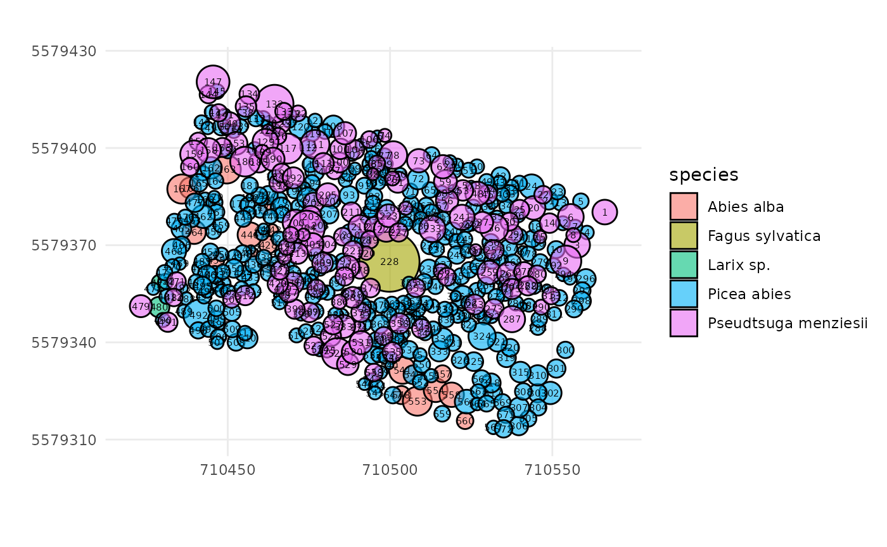
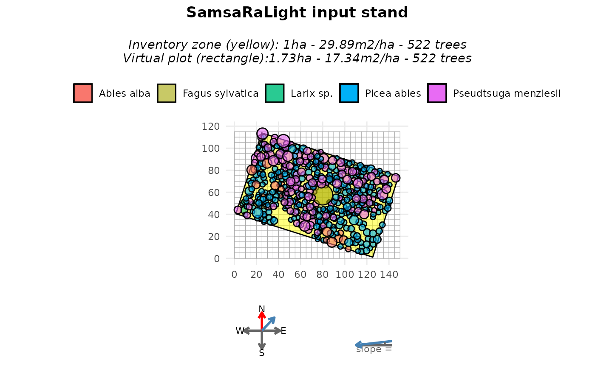
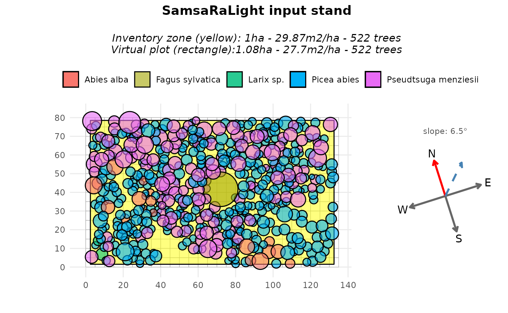
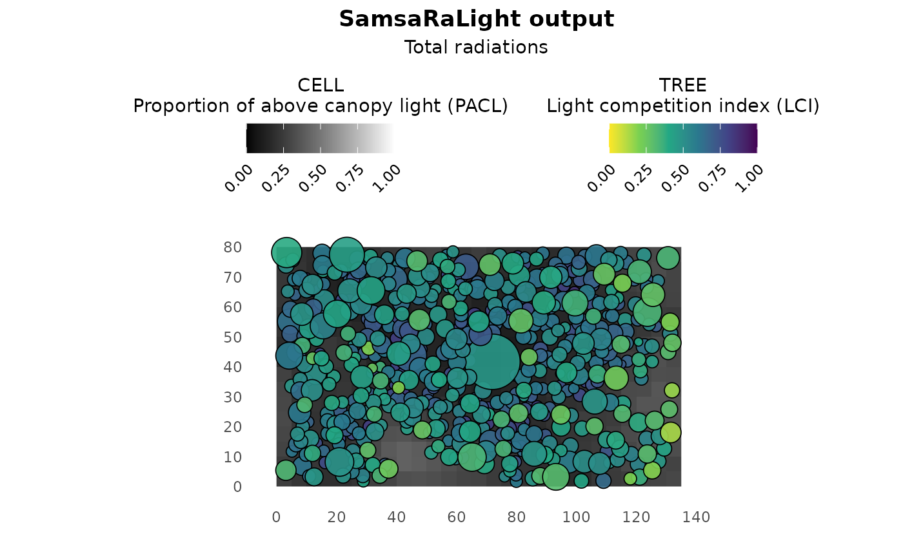
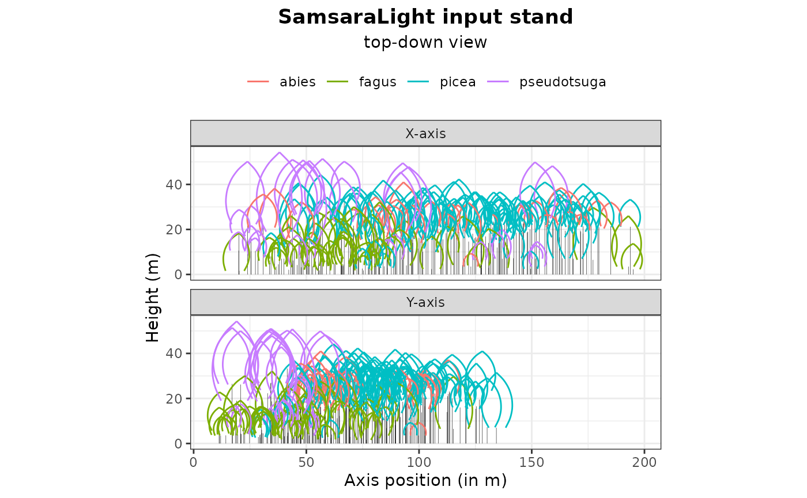
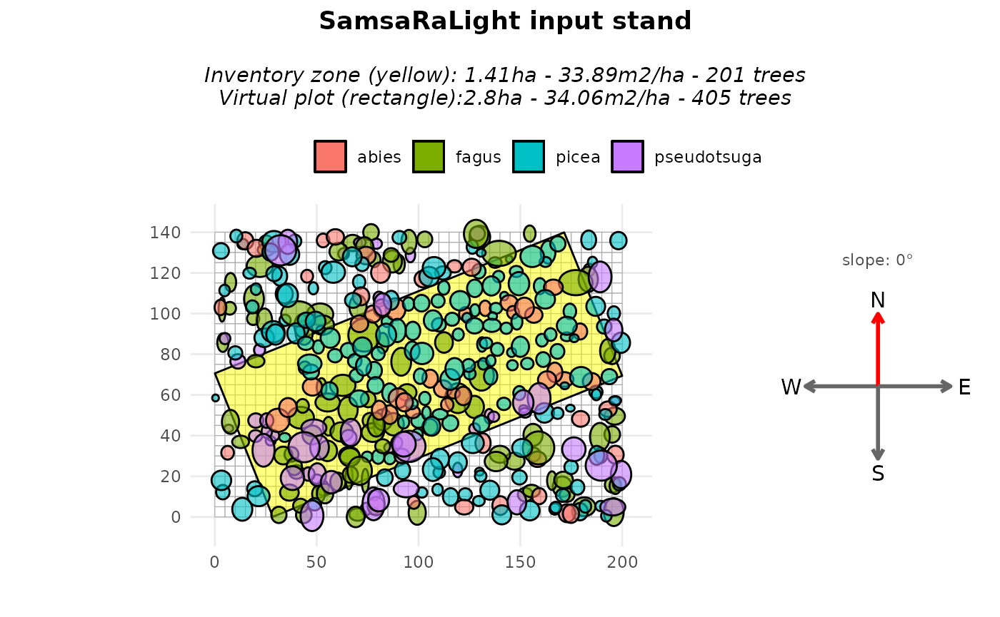
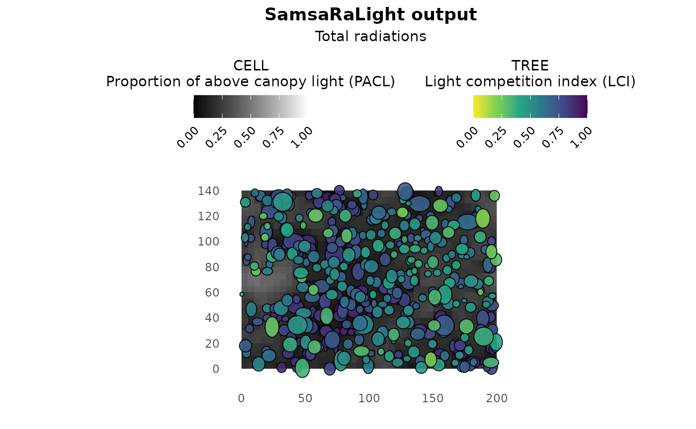
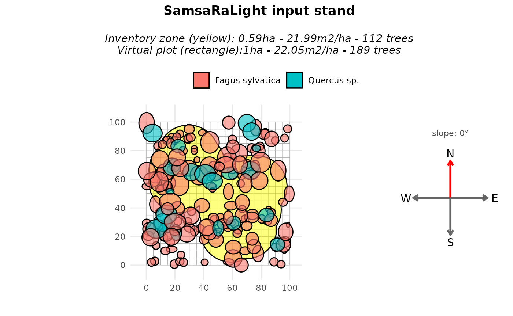
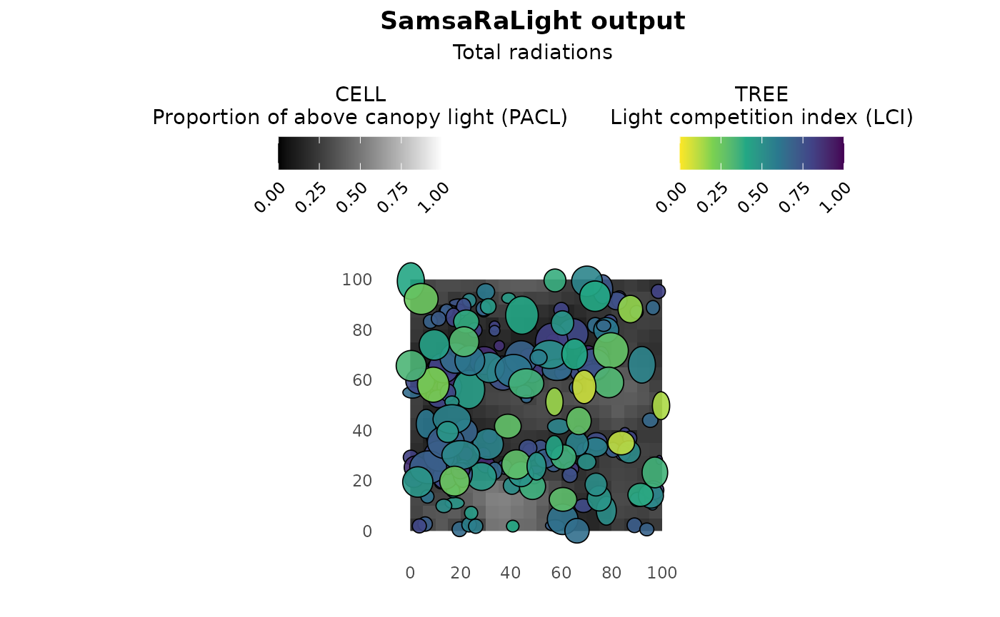

3 - More complex crown shapes and inventories
Represent tree crowns with asymmetric shapes Use non-axis-aligned GPS inventory or non-rectangular inventory zone
3-complex_cases.Rmd
library(SamsaRaLight)
library(dplyr)
#>
#> Attaching package: 'dplyr'
#> The following objects are masked from 'package:stats':
#>
#> filter, lag
#> The following objects are masked from 'package:base':
#>
#> intersect, setdiff, setequal, unionIntroduction
In previous tutorials, inventories were assumed to be simple, axis-aligned rectangles defined directly in a local Cartesian coordinate system (meters). In practice, however, forest inventories are often more complex. In addition, tree crowns were represented using simple symmetric shapes (“E” and “P”). However, real tree crowns are often asymmetric, both horizontally (different crown radii in different directions) and vertically (maximum crown width not located at mid-crown for “E” nor crown base height for “P”).
In this vignette, we illustrate two common but more advanced situations:
- Inventory based on GPS coordinates where tree positions are given as longitude and latitude. We will convert the geographic coordinates into planar and axis-align the inventory zone with the virtual plot axes.
- Inventory with asymmetric crown shapes, but working with a non axis-aligned rectangle inventory zone as rotating asymmetric crowns is tricky here.
- Inventory with non-rectangular shapes, where the sampled area is defined by an irregular polygon (e.g. a combination of circular plots), filled around by virtual trees.
The goal is to show how these inventories can be converted into a consistent virtual stand suitable for SamsaRaLight simulations, while remaining faithful to the original field protocol, in line with more realistic crown geometries using composite crown shapes.
Axis-aligned stand from GPS data
Context and data
We first use the example inventory IRRES1, stored in
the package as SamsaRaLight::data_IRRES1. This inventory
was collected in Belgian Ardennes by Gauthier Ligot in the scope of the
IRRES project, which investigates the transition from even-aged to
uneven-aged forest management. The stand is dense in a sloppy terrain
and is mainly composed of Norway spruce and Douglas-fir, with a coppice
stool of beech at its center and a few silver fir and larch trees.
trees_irres <- SamsaRaLight::data_IRRES1$trees
str(trees_irres)
#> 'data.frame': 522 obs. of 14 variables:
#> $ id_tree : int 1 3 4 5 6 7 8 9 10 12 ...
#> $ species : chr "Pseudtsuga menziesii" "Pseudtsuga menziesii" "Picea abies" "Picea abies" ...
#> $ dbh_cm : num 36.5 37.3 18.7 27 31 22 17.7 33.9 33.5 21.7 ...
#> $ crown_type: chr "P" "P" "P" "P" ...
#> $ h_m : num 28.2 31.2 19.5 23.4 30.9 ...
#> $ hbase_m : num 10.42 14.44 9.99 11.38 13.04 ...
#> $ hmax_m : logi NA NA NA NA NA NA ...
#> $ rn_m : num 3.8 3.94 2.09 2.39 3.97 2.21 2.18 4.78 2.62 2.16 ...
#> $ rs_m : num 3.8 3.94 2.09 2.39 3.97 2.21 2.18 4.78 2.62 2.16 ...
#> $ re_m : num 3.8 3.94 2.09 2.39 3.97 2.21 2.18 4.78 2.62 2.16 ...
#> $ rw_m : num 3.8 3.94 2.09 2.39 3.97 2.21 2.18 4.78 2.62 2.16 ...
#> $ crown_lad : num 0.5 0.5 0.5 0.5 0.5 0.5 0.5 0.5 0.5 0.5 ...
#> $ lon : num 5.96 5.96 5.96 5.96 5.96 ...
#> $ lat : num 50.3 50.3 50.3 50.3 50.3 ...Running check_inventory() on this dataset immediately
fails, with an error indicating that columns x and
y are missing. This is expected: tree positions are
provided as longitude (lon) and latitude
(lat), expressed in degrees. To illustrate why this is
problematic, we (incorrectly) rename longitude and latitude to
x and y and attempt to plot the inventory. It
leads to a meaningless plot as angular coordinates (degrees) are
incompatible with crown dimensions expressed in meters.
SamsaRaLight::plot_inventory(
trees_irres %>% rename(x = lon, y = lat)
)
Coordinate conversion
Before creating a stand, coordinates must be converted into a planar Cartesian system with metric units. Tree coordinates can be converted from the global WGS84 reference system (EPSG:4326) to a projected coordinate system expressed in meters such as the Universal Transverse Mercator (UTM) system. It is a grid-based, metric coordinate system mapping the Earth using 60 longitudinal zones (each of them being 6-degree between 80°S and 84°N latitude), for each of the two hemispheres North and South.
The EPSG needed to convert coordinates depends on the plot
coordinates. However, the UTM zone can be automatically inferred from
the mean longitude
(
and hemisphere inferred from the mean latitude
(
if latitude is positive or
if latitude is negative). Thus, EPSG code can be automatically computed
as
.
The function SamsaRaLight::create_xy_from_lonlat() allows
to automatically convert a data.frame containing lon/lat coordinates
into planar XY coordinates determining the appropriate UTM system.
trees_irres_xy <- SamsaRaLight::create_xy_from_lonlat(trees_irres)
str(trees_irres_xy)
#> List of 2
#> $ df :'data.frame': 522 obs. of 16 variables:
#> ..$ id_tree : int [1:522] 1 3 4 5 6 7 8 9 10 12 ...
#> ..$ species : chr [1:522] "Pseudtsuga menziesii" "Pseudtsuga menziesii" "Picea abies" "Picea abies" ...
#> ..$ dbh_cm : num [1:522] 36.5 37.3 18.7 27 31 22 17.7 33.9 33.5 21.7 ...
#> ..$ crown_type: chr [1:522] "P" "P" "P" "P" ...
#> ..$ h_m : num [1:522] 28.2 31.2 19.5 23.4 30.9 ...
#> ..$ hbase_m : num [1:522] 10.42 14.44 9.99 11.38 13.04 ...
#> ..$ hmax_m : logi [1:522] NA NA NA NA NA NA ...
#> ..$ rn_m : num [1:522] 3.8 3.94 2.09 2.39 3.97 2.21 2.18 4.78 2.62 2.16 ...
#> ..$ rs_m : num [1:522] 3.8 3.94 2.09 2.39 3.97 2.21 2.18 4.78 2.62 2.16 ...
#> ..$ re_m : num [1:522] 3.8 3.94 2.09 2.39 3.97 2.21 2.18 4.78 2.62 2.16 ...
#> ..$ rw_m : num [1:522] 3.8 3.94 2.09 2.39 3.97 2.21 2.18 4.78 2.62 2.16 ...
#> ..$ crown_lad : num [1:522] 0.5 0.5 0.5 0.5 0.5 0.5 0.5 0.5 0.5 0.5 ...
#> ..$ lon : num [1:522] 5.96 5.96 5.96 5.96 5.96 ...
#> ..$ lat : num [1:522] 50.3 50.3 50.3 50.3 50.3 ...
#> ..$ x : num [1:522] 710566 710558 710561 710559 710556 ...
#> ..$ y : num [1:522] 5579380 5579370 5579374 5579384 5579379 ...
#> $ epsg: num 32631After this conversion, tree positions are expressed in meters and the inventory can now be validated and visualized correctly.
SamsaRaLight::check_inventory(trees_irres_xy$df)
#> Inventory table successfully validated.
plot_inventory(trees_irres_xy$df)
Define the inventory zone
In the IRRES1 example dataset, the trees were inventoried within a rectangular inventory zone. However, the vertices are also expressed in a lon/lat coordinate system and therefore need to be converted.
polygon_irres_xy <- SamsaRaLight::create_xy_from_lonlat(
SamsaRaLight::data_IRRES1$core_polygon
)
str(polygon_irres_xy)
#> List of 2
#> $ df :'data.frame': 4 obs. of 4 variables:
#> ..$ lon: num [1:4] 5.96 5.96 5.96 5.96
#> ..$ lat: num [1:4] 50.3 50.3 50.3 50.3
#> ..$ x : num [1:4] 710569 710545 710421 710445
#> ..$ y : num [1:4] 5579382 5579308 5579348 5579421
#> $ epsg: num 32631We can verify that the trees and the inventory polygon are both
expressed in metres within the same coordinate system. To do so, we can
use the same plot_inventory() function as above but adding
the core polygon data.frame as a second argument.
SamsaRaLight::plot_inventory(
trees_irres_xy$df,
polygon_irres_xy$df
)
We can use the function SamsaRaLight::check_polygon() to
check that the core polygon is geometrically correct and encompasses all
the inventoried trees. If it does not, the function tries to correct it
by making minimal changes, such as converting the polygon into a valid
one (e.g. if the vertices are not in the correct order) or adding a
small buffer to the polygon in an attempt to include all the trees
(e.g. if some trees are close to the border, small rounding errors can
lead to the polygon excluding them computationally). Thus, the function
returns the minimally corrected polygon and specifies this with a
message if the polygon has been modified; otherwise, it throws an
error.
polygon_irres_xy$df <- SamsaRaLight::check_polygon(
polygon_irres_xy$df,
trees_irres_xy$df
)
#> Polygon successfully validated.Create the virtual stand
Fortunately, the SamsaRaLight package allows you to provide both tree
inventory and core polygon tables with only longitude/latitude
coordinates to the create_sl_stand() function, which
automatically performs system conversions. The stand creation process
will also handle coordinate shifts into a relative coordinate system
starting at 0.
Because the projected coordinates follow a conventional GIS
orientation (Y axis pointing North), we set north2x = 90,
meaning that geographic North corresponds to the positive Y
direction.
stand_irres <- SamsaRaLight::create_sl_stand(
trees_inv = SamsaRaLight::data_IRRES1$trees,
cell_size = 5,
latitude = SamsaRaLight::data_IRRES1$info$latitude,
slope = SamsaRaLight::data_IRRES1$info$slope,
aspect = SamsaRaLight::data_IRRES1$info$aspect,
north2x = 90,
core_polygon_df = SamsaRaLight::data_IRRES1$core_polygon
)
#> `trees_inv` converted from lon/lat to planar coordinates (UTM).
#> `core_polygon_df` converted from lon/lat to planar coordinates (UTM).
#> SamsaRaLight stand successfully created.
plot(stand_irres)
The stand dimensions are chosen as the smallest grid (in number of cells) that fully contains the inventory zone:
stand_irres$geometry$n_cells_x
#> [1] 30
stand_irres$geometry$n_cells_y
#> [1] 23This corresponds to a stand size of:
stand_irres$geometry$n_cells_x * stand_irres$geometry$cell_size
#> [1] 150
stand_irres$geometry$n_cells_y * stand_irres$geometry$cell_size
#> [1] 115Then, tree coordinates are shifted to a local coordinate system starting at zero:
stand_irres$transform$shift_x
#> [1] -710420
stand_irres$transform$shift_y
#> [1] -5579307Axis-aligned rectangle option
At this stage, the inventory is not yet axis-aligned. This is not a
technical issue with this package, and the light computation can be run
using the virtual non-axis-aligned stand created above. However, as can
be seen in the above plot, the area surrounding the rectangular
inventory zone is empty, which could affect light interception.
Therefore, in most cases, it is preferable to work with a rectangle
aligned with the simulation axes. To do so, we have to recreate the
virtual stand by setting modify_polygon = "aarect" (for
axis-aligned rectangle), which:
- compute the minimum bounding rectangle of the inventory polygon (in this case, as our inventory zone is already a rectangle, it does not change anything),
-
rotate the entire stand (trees and polygon) so that
this rectangle becomes axis-aligned (the rotation counter-clockwise in
degrees applied to the stand is stored internally in
transform$rotation_ccw$) -
update the
north2xvalue accordingly (and can be seen in the compass of theplot()function)
stand_irres_aarect <- SamsaRaLight::create_sl_stand(
trees_inv = SamsaRaLight::data_IRRES1$trees,
cell_size = 5,
latitude = SamsaRaLight::data_IRRES1$info$latitude,
slope = SamsaRaLight::data_IRRES1$info$slope,
aspect = SamsaRaLight::data_IRRES1$info$aspect,
north2x = 90,
core_polygon_df = SamsaRaLight::data_IRRES1$core_polygon,
modify_polygon = "aarect"
)
#> `trees_inv` converted from lon/lat to planar coordinates (UTM).
#> `core_polygon_df` converted from lon/lat to planar coordinates (UTM).
#> SamsaRaLight stand successfully created.
plot(stand_irres_aarect)
As we can see, rotating the stand results in a rectangular inventory zone (shown in yellow) that may not cover the entire virtual stand area. This creates empty spaces around the borders of the virtual stand and reduces the total basal area per hectare (due to a larger area with the same number of trees). This could slightly bias the light computation, even though the small empty areas on the borders could be negligible for tree light interception. This can also be avoided by:
- Setting the cell size to a smaller value to reduce the empty space, which would result in much higher computation time.
- Alternatively, the rectangle could be set up without being axis-aligned and the ‘fill_around’ argument could be used. This will be explained in the second and third examples of this tutorial and involves filling around the inventory zone with virtual trees, but introduces stochasticity to the stand virtualisation.
Run SamsaraLight
As shown in the previous tutorials, monthly radiation data are retrieved using the geographic location of the stand.
data_radiations_irres <- SamsaRaLight::get_monthly_radiations(
latitude = SamsaRaLight::data_IRRES1$info$latitude,
longitude = SamsaRaLight::data_IRRES1$info$longitude
)And the simulation is run using run_sl() (here run with
the axis-aligned inventory zone).
output_irres_aarect <- SamsaRaLight::run_sl(
sl_stand = stand_irres_aarect,
monthly_radiations = data_radiations_irres
)
#> parallel mode disabled because OpenMP was not available
#> SamsaRaLight simulation was run successfully.
plot(output_irres_aarect)
Asymmetric crown shapes with rectangle, non-axis-aligned inventory zone
Crown shapes available in SamsaRaLight
SamsaRaLight supports the following crown types:
"E", "P", "2E", "4P", "8E". The number indicates how many
crown parts are used. The letter indicates the geometric shape
(Ellipsoid or Paraboloid). Choose the simplest crown type that matches
your data quality.
Symmetric crown shapes
Symetric shapes used in the Tutorial 1, defined by the mean crown
radius (mean of the four radius rn_m, rs_m,
re_m and rw_m) and the crown depth (computed
as h_m - hbase_m. These shapes are simple and efficient,
but cannot represent crown asymmetry, knowing that crown asymmetry
strongly affects light interception.
Asymmetric crown shapes
More complex shapes are created by splitting the crown into multiple geometric parts.
“2E” — Vertical asymmetry
Crown split into an upper and a lower ellipsoid
Allows vertical asymmetry
Requires
hmax_m, the height of maximum crown radius
Crown remains horizontally symmetric. Use this shape when crown expansion is not centered vertically.
“4P” — Horizontal asymmetry
Crown split into four horizontal paraboloids
Different radii allowed in the four cardinal directions:
rn_m(north),rs_m(south),re_m(east) andrw_m(west)Crown is vertically symmetric:
hmax_mis NOT required (paraboloid, thushmax = hbase_m)
Use this shape when crowns are laterally deformed by competition.
Example with rectangle, non-axis-aligned inventory zone
Context and data
We illustrate asymmetric crowns using the Bechefa
marteloscope, stored in the package as
SamsaRaLight::data_bechefa.
This marteloscope was installed in Belgian Ardennes by Gauthier Ligot in the scope of the IRRES project, which investigates the transition from even-aged to uneven-aged forest management. This is a mature mixed stand of Douglas fir and spruce in the Belgian Ardennes. The stand has been uneven-aged for more than 10 years.
Tree inventory
All trees use the "8E" crown type, allowing both
horizontal and vertical asymmetry. Each tree provides four directional
crown radii (rn_m for maximum crown radius pointing north,
rs_m for south, re_m for east,
rw_m for west) and the height of maximum crown expansion
(hmax_m).
head(SamsaRaLight::data_bechefa$trees)
#> id_tree species x y dbh_cm crown_type h_m hbase_m hmax_m rn_m
#> 1 103 abies 163.1 67.3 68.43663 8E 38.5 16.6 28.2 4.32
#> 2 615 pseudotsuga 66.8 41.4 95.49297 8E 50.2 14.0 33.3 7.01
#> 3 102 pseudotsuga 159.2 58.2 111.72677 8E 48.2 10.8 27.1 8.38
#> 4 708 pseudotsuga 43.8 34.2 116.81973 8E 51.0 15.8 27.0 7.37
#> 5 707 pseudotsuga 51.4 34.1 99.94930 8E 50.5 16.0 26.7 6.73
#> 6 712 pseudotsuga 57.2 17.0 112.04508 8E 51.4 14.4 26.5 5.02
#> rs_m re_m rw_m crown_lad
#> 1 4.12 3.70 5.20 0.6
#> 2 6.45 5.87 4.15 0.6
#> 3 6.72 4.69 6.51 0.6
#> 4 7.43 9.85 5.44 0.6
#> 5 5.16 3.40 5.76 0.6
#> 6 6.02 5.00 5.32 0.6Create the stand
The subsequent steps are identical to those used with symmetric crowns (see Tutorial 1). Introducing asymmetric crowns only requires adapting the initial tree inventory. Horizontal asymmetry is clearly visible in the plots, whereas vertical asymmetry is more difficult to perceive graphically because crowns are displayed as projected shapes.
It is important to note that the north2x parameter must
be a multiple of 90° (i.e. 0°, 90°, 180°, or 270°) when the virtual
stand contains at least one horizontally asymmetric crown type
(i.e. "4P" or "8E"). Horizontal asymmetry is
defined by assigning different crown radii to the four cardinal
directions (north, south, east, and west). These four directional radii
are internally converted into planar X–Y axis-aligned radii according to
the value of north2x.
stand_bechefa <- SamsaRaLight::create_sl_stand(
trees_inv = SamsaRaLight::data_bechefa$trees,
cell_size = 5,
latitude = SamsaRaLight::data_bechefa$info$latitude,
slope = SamsaRaLight::data_bechefa$info$slope,
aspect = SamsaRaLight::data_bechefa$info$aspect,
north2x = SamsaRaLight::data_bechefa$info$north2x,
core_polygon_df = SamsaRaLight::data_bechefa$core_polygon
)
#> SamsaRaLight stand successfully created.
plot(stand_bechefa)
plot(stand_bechefa, top_down = TRUE)
Fill around the inventory zone
Such as in the first example of this tutorial, we may want to rotate
the stand in order to axis-align it. However, because of the same reason
as the described above for north2x when considering at
least one horizontal asymmetric crown, we can rotate the stand only by a
multiple of 90°, leading to impossibility to axis-align the stand in
most case. For this reason, the argument “modify_polygon = aarect” is
desactivated if at least one horizontal asymmetric crown is present in
the stand. However, the user can still transform and ensure its
inventory zone is a perfect rectangle (minimum enclosing rectangle area)
with the argument modify_polygon = "rect". Otherwise, to
not modify the given polygon, the default argument is
modify_polygon = "none".
To counteract the fact that plot is empty around the non-axis aligned
rectangle inventory zone, we can use the argument
fill_around = TRUE when creating the vitual stand with the
create_sl_stand(). This will add virtual trees
outside the inventory polygon, within the simulation grid:
sampled from the inventoried trees,
randomly positioned outside the inventory zone,
until the surrounding area reaches the same basal area per hectare as the inventory zone.
stand_bechefa_filled <- SamsaRaLight::create_sl_stand(
trees_inv = SamsaRaLight::data_bechefa$trees,
cell_size = 5,
latitude = SamsaRaLight::data_bechefa$info$latitude,
slope = SamsaRaLight::data_bechefa$info$slope,
aspect = SamsaRaLight::data_bechefa$info$aspect,
north2x = SamsaRaLight::data_bechefa$info$north2x,
core_polygon_df = SamsaRaLight::data_bechefa$core_polygon,
modify_polygon = "rect",
fill_around = TRUE
)
#> SamsaRaLight stand successfully created.
plot(stand_bechefa_filled)
When plotting, the argument only_inv = TRUE allows
displaying only the inventoried trees (inside the yellow polygon). Added
trees are identified in the stand object using the logical column
added_to_fill.
table(stand_bechefa_filled$trees$added_to_fill)
#>
#> FALSE TRUE
#> 201 204A summary of both the inventory zone and the full virtual stand can
be obtained with the summary() function, showing that both
zones exhibit similar basal area per hectare and mean quadratic
diameter.
summary(stand_bechefa_filled)
#>
#> SamsaRaLight stand summary
#> ================================
#>
#>
#> Inventory (core polygon):
#> Area : 1.41 ha
#> Trees : 201
#> Density : 142.9 trees/ha
#> Basal area : 33.89 m2/ha
#> Quadratic mean DBH: 54.9 cm
#>
#> Simulation stand (core + filled buffer):
#> Area : 2.80 ha
#> Trees : 405
#> Density : 144.6 trees/ha
#> Basal area : 34.06 m2/ha
#> Quadratic mean DBH: 54.8 cm
#>
#> Stand geometry:
#> Grid : 40 x 28 (1120 cells)
#> Cell size : 5.00 m
#> Slope : 0.00 deg
#> Aspect : 0.00 deg
#> North to X-axis : 90.00 deg
#>
#> Number of sensors: 0This approach assumes that the surrounding stand is structurally similar to the inventoried area. As mentionned above, this add stochasticity in the stand virtualisation, thus to be considered with care and maybe with duplicates for rigorous scientific studies for example.
Run SamsaraLight
radiations_bechefa <- SamsaRaLight::get_monthly_radiations(
latitude = SamsaRaLight::data_bechefa$info$latitude,
longitude = SamsaRaLight::data_bechefa$info$longitude)
output_bechefa <- SamsaRaLight::run_sl(
sl_stand = stand_bechefa_filled,
monthly_radiations = radiations_bechefa
)
#> parallel mode disabled because OpenMP was not available
#> SamsaRaLight simulation was run successfully.
plot(output_bechefa)
Non-rectangular inventory zones
Context and data
We now consider the example inventory Cloture20,
stored in the package as SamsaRaLight::data_cloture20.
This inventory was collected by Gauthier Ligot in Wallonia, Belgium, as part of the CLOTURE project, which investigates the effect of fences on beech and oak plots with varying beech proportions. In this case, the plot is primarily made up of beech trees (Fagus sylvatica). The crowns are described with full asymmetric shapes “8E”. The inventory protocol is complex and resulted in non-rectangular inventory zones formed from multiple circular areas. Thus, the core polygon is defined by 94 vertices:
str(SamsaRaLight::data_cloture20$core_polygon)
#> 'data.frame': 94 obs. of 2 variables:
#> $ x: num 54 56.4 59.1 61.9 64.8 ...
#> $ y: num 70.4 72.2 73.6 74.6 75.2 ...Virtual stand with complex core polygon
First, we can create the virtual stand by setting the pre-defined
core polygon stored in the package. Representing the inventory as a
rectangle in this case would be inconsistent with the field protocol.
Therefore, the polygon is preserved inside a larger virtual stand with
modify_polygon = "none" and the virtual stand is filled
around the inventory zone with fill_around = TRUE.
stand_cloture_filled <- SamsaRaLight::create_sl_stand(
trees_inv = SamsaRaLight::data_cloture20$trees,
cell_size = 5,
latitude = SamsaRaLight::data_cloture20$info$latitude,
slope = SamsaRaLight::data_cloture20$info$slope,
aspect = SamsaRaLight::data_cloture20$info$aspect,
north2x = SamsaRaLight::data_cloture20$info$north2x,
core_polygon_df = SamsaRaLight::data_cloture20$core_polygon,
modify_polygon = "none",
fill_around = TRUE
)
#> SamsaRaLight stand successfully created.
plot(stand_cloture_filled)
Simulation and summaries
Finally, the radiation data and the simulation run are done as usual:
data_radiations_cloture <- SamsaRaLight::get_monthly_radiations(
latitude = SamsaRaLight::data_cloture20$info$latitude,
longitude = SamsaRaLight::data_cloture20$info$longitude
)
output_cloture_filled <- SamsaRaLight::run_sl(
sl_stand = stand_cloture_filled,
monthly_radiations = data_radiations_cloture
)
#> parallel mode disabled because OpenMP was not available
#> SamsaRaLight simulation was run successfully.
plot(output_cloture_filled)
And both inputs and outputs can be summarised using:
summary(stand_cloture_filled)
#>
#> SamsaRaLight stand summary
#> ================================
#>
#>
#> Inventory (core polygon):
#> Area : 0.59 ha
#> Trees : 112
#> Density : 190.5 trees/ha
#> Basal area : 21.99 m2/ha
#> Quadratic mean DBH: 38.3 cm
#>
#> Simulation stand (core + filled buffer):
#> Area : 1.00 ha
#> Trees : 189
#> Density : 189.0 trees/ha
#> Basal area : 22.05 m2/ha
#> Quadratic mean DBH: 38.5 cm
#>
#> Stand geometry:
#> Grid : 20 x 20 (400 cells)
#> Cell size : 5.00 m
#> Slope : 0.00 deg
#> Aspect : 0.00 deg
#> North to X-axis : 90.00 deg
#>
#> Number of sensors: 0
summary(output_cloture_filled)
#>
#> SamsaRaLight simulation summary
#> ================================
#>
#> Trees (crown interception)
#> ---------------------------
#> epot e lci
#> Min. : 15352 Min. : 310.5 Min. :0.08301
#> 1st Qu.: 95729 1st Qu.: 20343.9 1st Qu.:0.50907
#> Median : 181528 Median : 52608.5 Median :0.69219
#> Mean : 346562 Mean :151399.9 Mean :0.65603
#> 3rd Qu.: 580654 3rd Qu.:247790.1 3rd Qu.:0.80633
#> Max. :1232315 Max. :727892.4 Max. :0.99127
#>
#> Cells (ground light)
#> -------------------
#> e pacl punobs
#> Min. : 192.2 Min. :0.05108 Min. :0.0000
#> 1st Qu.: 612.7 1st Qu.:0.16284 1st Qu.:0.4289
#> Median : 868.1 Median :0.23073 Median :0.5903
#> Mean : 894.0 Mean :0.23760 Mean :0.5535
#> 3rd Qu.:1100.3 3rd Qu.:0.29245 3rd Qu.:0.7007
#> Max. :2048.5 Max. :0.54446 Max. :0.8800
#>
#> Sensors
#> -------
#> No sensor energy variables available